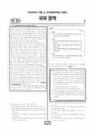

문제지

전국연합학력평가 · 시·도교육청 주관
2025년 10월 고1 학력평가 국어 1등급컷은 원점수 91점(추정), 표준점수 최고점은 142점입니다.
원점수 1등급컷은 공식 발표값이 아니라 EBSi·입시기관 값입니다. 등급별 값은 등급컷 표, 출처 구분은 데이터 원칙에 있습니다.

시험지를 먼저 풀어 보세요. 등급컷·표준점수·난이도는 흐리게 가려 뒀어요.
| 등급 | 원점수 | 표준점수 | 백분위 | 누적 |
|---|---|---|---|---|
| 1 | 91 | 134 | 96 | 4.74% |
| 2 | 81 | 126 | 88 | 12.18% |
| 3 | 72 | 118 | 77 | 24.73% |
| 4 | 59 | 107 | 60 | 40.35% |
| 5 | 42 | 92 | 40 | 60.85% |
| 6 | 28 | 80 | 23 | 77.03% |
| 7 | 22 | 75 | 12 | 90.56% |
| 8 | 17 | 71 | 4 | 97.09% |
등급별 컷 · 입시기관 3곳 원점수 추정 종합(메가스터디·종로학원·대성마이맥) · 만점 100점
| 등급 | 표준점수 이상 | 인원(명) | 비율 |
|---|---|---|---|
| 1 | 134 | 12,994 | 4.05% |
| 2 | 126 | 28,565 | 8.9% |
| 3 | 118 | 34,286 | 10.68% |
| 4 | 107 | 54,980 | 17.13% |
| 5 | 92 | 64,457 | 20.08% |
| 6 | 80 | 53,573 | 16.69% |
| 7 | 75 | 37,577 | 11.71% |
| 8 | 71 | 23,165 | 7.22% |
| 9 | 56 | 11,380 | 3.55% |
시·도교육청 공개 자료
출처: 시·도교육청이 공개한 전국연합학력평가 성적 분석·통계자료(공개 자료 보기).
EBSi 응답자 기준으로 가장 많이 틀린 문항은 23번(3점)이고, 오답률은 67.6%입니다. 오답률 50%를 넘은 문항은 4개입니다.
| 순위 | 문항 | 배점 | 오답률 | 정답 | 많이 고른 오답 |
|---|---|---|---|---|---|
| 1 | 23번 | 3점 | 67.6% | ② | ④ 27.8% |
| 2 | 7번 | 2점 | 55.5% | ② | ③ 20.2% |
| 3 | 42번 | 3점 | 53.3% | ③ | ⑤ 16.5% |
| 4 | 3번 | 2점 | 53.3% | ⑤ | ④ 24.2% |
| 5 | 44번 | 2점 | 49.8% | ④ | ③ 31.1% |
| 6 | 20번 | 3점 | 48.8% | ② | ① 14.8% |
| 7 | 32번 | 2점 | 47.7% | ④ | ① 16.2% |
| 8 | 38번 | 3점 | 47.6% | ⑤ | ④ 18% |
| 9 | 45번 | 3점 | 46.3% | ⑤ | ④ 17.1% |
| 10 | 22번 | 2점 | 42% | ④ | ① 17.6% |
| 11 | 37번 | 2점 | 41.4% | ② | ④ 16.9% |
| 12 | 34번 | 2점 | 36.4% | ② | ③ 14.1% |
| 13 | 35번 | 2점 | 35.9% | ③ | ② 11.9% |
| 14 | 25번 | 2점 | 35.9% | ② | ⑤ 10.4% |
| 15 | 31번 | 2점 | 34.7% | ① | ③ 13.8% |
EBSi 가채점 응답자 기준 · 전 문항 중 오답률 상위 15문항
출처: EBSi 역대 등급컷·오답률 공개 화면. 가채점에 참여한 EBSi 이용자 응답이라 전체 응시자 정답률과는 다를 수 있습니다.
발행 기관: 시·도교육청(전국연합학력평가). 파일 위치: 이 사이트가 보관한 사본. 저작권은 발행 기관에 있습니다. 원본과 다르거나 게시 중단이 필요하면 연락처로 알려 주세요. 등급컷 출처 구분은 데이터 원칙에서 설명합니다.
막대 색은 역대 대비 난이도 · 진한 막대가 이 시험 · 막대를 누르면 그 회차로 이동
| 회차 | 1등급컷 | 표점 최고 | 1등급 표점 | 난이도 |
|---|---|---|---|---|
| 10월 학평2025년 고1이 시험 | 91 | 142 | 134 | 보통 |
| 9월 학평2025년 고1 | 81 | 156 | 136 | 매우 어려움 |
| 6월 학평2025년 고1 | 86 | 150 | 136 | 어려움 |
| 3월 학평2025년 고1 | 84 | 153 | 135 | 쉬움 |
| 10월 학평2024년 고1 | 89 | 145 | 136 | 어려움 |
| 9월 학평2024년 고1 | 87 | 148 | 136 | 어려움 |
| 6월 학평2024년 고1 | 87 | 146 | 134 | 보통 |
| 3월 학평2024년 고1 | 91 | 141 | 131 | 매우 쉬움 |
| 9월 학평2023년 고1 | 84 | 150 | 135 | 매우 어려움 |
| 6월 학평2023년 고1 | 87 | 149 | 136 | 보통 |
국어는 교육청 채점 결과 1등급 구분 표준점수가 134점, 최고점이 142점(1,060명)이었습니다. 9월(1등급 136점, 최고점 156점, 38명)보다 크게 쉬웠고, EBSi 가채점 응답자 기준 오답률 50%를 넘은 문항은 4개였습니다.
가장 많이 틀린 23번(3점, 67.6%)은 광원 램프·가스 셀·광학 필터·감지기로 이루어진 비분산형 적외선 분석기의 구조를 도식화한 <보기>를 이해하는 문항이었습니다. 7번(55.5%)은 '묻히다' 등을 표준 발음할 때 교체·첨가·탈락·축약이 복합적으로 일어나는 과정을 설명하는 학습 활동, 3번(53.3%)은 주체·객체·상대 높임 표현을 다룬 발표 후속 수업 문항이었습니다.
독서는 외부준거가격과 내부준거가격으로 나뉘는 준거가격(11~16번), '실존은 본질에 앞선다'는 사르트르의 존재론(17~20번), 적외선이 특정 기체에 흡수되는 원리를 이용한 비분산형 적외선 분석기(21~23번)였습니다. 작문은 기술과 사회의 관계를 다룬 논증문(24~27번), 밤하늘 사색 프로그램 뒤 쓴 수필(28~30번)이었습니다.
문학은 비몽사몽 중에 나타난 부인을 만나는 「하진양문록」(31~33번), 농사를 본업으로 노래한 김기홍 「농부사」와 유희의 산문(34~38번), 집을 맡기는 문제를 두고 할아버지와 한영이 나누는 대화가 나오는 황순원 「신들의 주사위」(39~42번), 박성룡 「처서기」와 고재종 「성숙」(43~45번)이었습니다.
「신들의 주사위」를 1970년대 산업화에 따른 농촌 사회의 변화를 다룬 글로 읽는 교과 융합 학습 활동 42번(53.3%)이 문학에서 가장 많이 틀린 문항이었습니다. 화법은 대화의 원리 발표(1~3번), 생태 탐방로 조성을 둘러싼 두 마을의 모의 협상(4~6번)이었습니다.